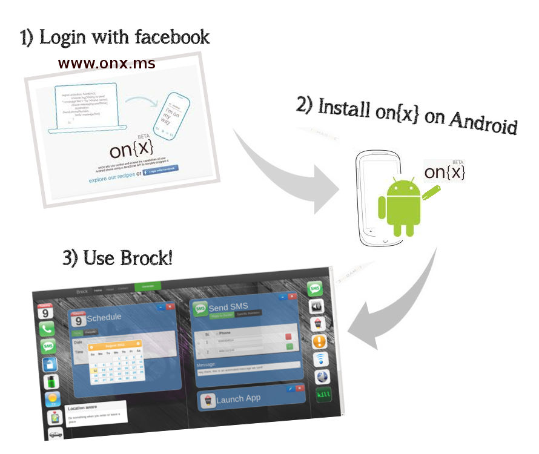

Just follow these 3 steps... [or jump to the Detailed Tutorial]:

Please visit http://onx.ms and click on 'Login with Facebook' to create your account
On your Android device, visit the Google Play store, and download the onx app. Search for onx and download the app developed by Microsoft. Once you are done installing, login with Facebook on the app as well. This will allow onx on the web to push apps to your phone directly
Creating an app with Brock is very simple. Let's take an example to understand it better.
Let's assume that we have a meeting now, and don't want to be disturbed - So we kept our phone in the silent mode. However, in case we get a call from a number, we want to automatically send a message back to them saying that 'I am in a meeting right now, I will call you back once I am done'. We also want to set a notification for ourself saying that certain calls need to be returned.
The Brock screen is divided into two panels - The one on the left is the 'Causes' panel, which basically form the various triggers - In this case, the incoming call forms the trigger. There are various other triggers as well, such as an incoming SMS, battery level, a particular date or time, etc.
The panel on the right is the 'Effects' panel, which forms the response to the triggers - In this case, sending a message to the caller and setting a notification form the response or 'effect'. Others include launching an app automatically, adjusting ringer volume, controlling wi-fi, etc.
Click on the 'Incoming Call' button in the causes toolbar. The item gets added into the Causes panel. You can now configure the cause by clicking on the pencil icon. You can minimise the cause once you are done. Clicking on the close icon will remove the cause. Similarly, choose 'Send SMS' and 'Set Notification' icons and configure them as well
You are almost there. Now, click on the Generate button in the toolbar. Doing so will quickly validate your configuration and throw an error if one is found. If everything is fine, then a piece of code is generated for you. Just select the code and copy it to the clipboard. Go to the Onx website - http://onx.ms and click on 'Write Code' at the top-right. In the editor that opens up, just paste the code that Brock generated for you. Give the rule a name by clicking on the rule name on the top so that you can know what the rule does. Once you are done, click on 'Save and send to phone' button on the top-right. That's it!
Your phone should now show a notification that the new rule has been pushed.